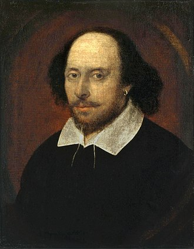

William Shakespeare
(26 April 1564 – 23 April 1616) was an English playwright, poet and actor, widely regarded as the greatest writer in the English language and the world's greatest dramatist. He is often called England's national poet and the "Bard of Avon" (or simply "the Bard").His extant works, including collaborations, consist of some 39 plays,154 sonnets, three long narrative poems, and a few other verses, some of uncertain authorship. His plays have been translated into every major living language and are performed more often than those of any other playwright.They also continue to be studied and reinterpreted.
Shakespeare was born and raised in Stratford-upon-Avon, Warwickshire. At the age of 18, he married Anne Hathaway, with whom he had three children: Susanna and twins Hamnet and Judith. Sometime between 1585 and 1592, he began a successful career in London as an actor, writer, and part-owner of a playing company called the Lord Chamberlain's Men, later known as the King's Men. At age 49 (around 1613), he appears to have retired to Stratford, where he died three years later. Few records of Shakespeare's private life survive; this has stimulated considerable speculation about such matters as his physical appearance, his sexuality, his religious beliefs and whether the works attributed to him were written by others.
These paragraphes copied from Wikipedia